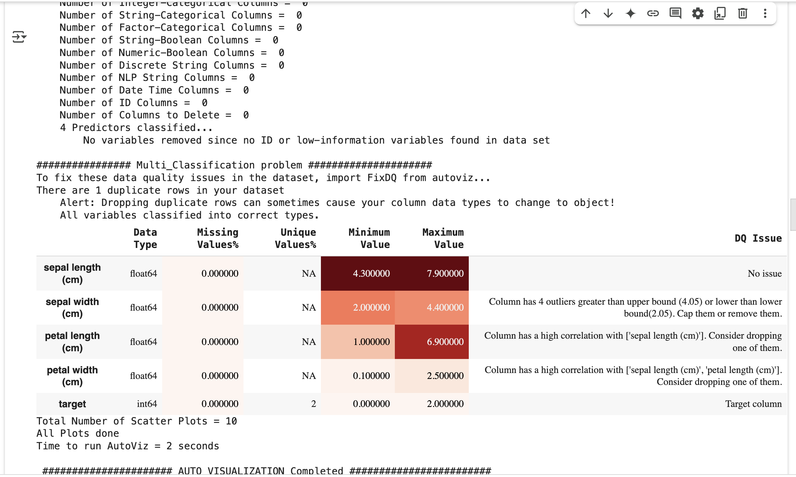

Exploratory Data Analysis (EDA) tools used in Machine Learning#
🧰 Popular EDA Tools and Libraries#
| Tool / Library | Description | Language |
|---|---|---|
| Pandas Profiling | Auto-generates a detailed EDA report from a pandas DataFrame. | Python |
| Sweetviz | Generates beautiful, high-density visualizations and comparisons between datasets. | Python |
| D-Tale | Combines pandas with a Flask web server for visual data exploration in a browser. | Python |
| AutoViz | Automatically visualizes any dataset with just one line of code. | Python |
| EDA (Dataprep) | Simple, interactive EDA with summary statistics, correlations, and missing value analysis. | Python |
| Lux | Augments pandas DataFrames with visual recommendations. | Python |
| Tidyverse (ggplot2) | A collection of R packages including tools for data wrangling and visualization. | R |
| DataExplorer | A powerful EDA package for automated report generation in R. | R |
| Orange | A visual programming tool for EDA and ML without coding. | GUI-based |
| Tableau / Power BI | Business intelligence tools that allow drag-and-drop EDA and visual analytics. | GUI-based |
| Qlik Sense | Interactive data visualization and EDA in enterprise environments. | GUI-based |
| Kibana | For time-series and log-based data exploration in Elasticsearch. | Web-based |
🔍 Popular Python Libraries Used in Manual EDA#
| Library | Use Case |
|---|---|
| pandas | Data manipulation and descriptive stats |
| matplotlib | Basic plotting |
| seaborn | Advanced statistical visualization |
| plotly | Interactive and dynamic visualizations |
| missingno | Missing value visualization |
| scipy / statsmodels | Statistical summaries, tests |
Pandas Profiling#
!pip install ydata-profiling
from ydata_profiling import ProfileReport
import pandas as pd
from sklearn.datasets import load_iris
from ydata_profiling import ProfileReport
# Load the Iris dataset
data = load_iris()
df = pd.DataFrame(data.data, columns=data.feature_names)
df['target'] = data.target
# Generate the profile report
profile = ProfileReport(df, title="Iris Dataset Profile Report", explorative=True)
# Save the report as an HTML file
profile.to_file("iris_profile_report.html")
Click here to view the Iris Profile Report
autoviz#
!pip install autoviz
from autoviz.AutoViz_Class import AutoViz_Class
av = AutoViz_Class()
report = av.AutoViz("", dfte=df, depVar="target")

sweetviz#
!pip install sweetviz
!pip install numpy==1.24.4
import pandas as pd
from sklearn.datasets import load_iris
import sweetviz as sv
# Load the Iris datasetdata
data = load_iris()
df = pd.DataFrame(data.data, columns=data.feature_names)
df['target'] = data.target
#Generate a report
report = sv.analyze(df)
report.show_html('iris_report.html')
Click here to view the Iris sweetviz Report
from sklearn.model_selection import train_test_split
train_df, test_df = train_test_split(df, test_size=0.2, random_state=42)
# Compare two Datasets
compare_report = sv.compare([train_df, "Training Data"], [test_df, "Test Data"])
compare_report.show_html('compare_report.html')
Click here to view the Iris sweetviz Report
import seaborn as sns
titanic_df = sns.load_dataset('titanic')
report = sv.analyze(titanic_df, target_feat='survived')
report.show_html('titanic_report.html')